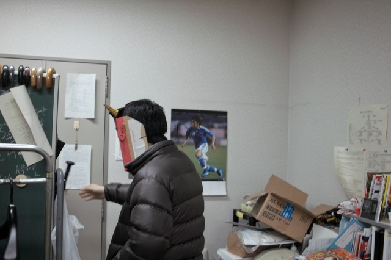
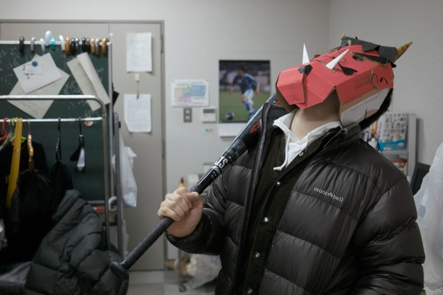
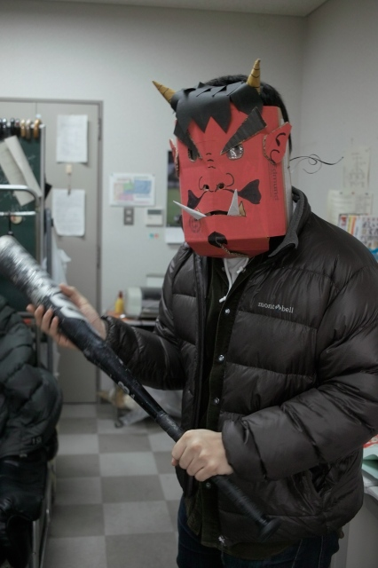
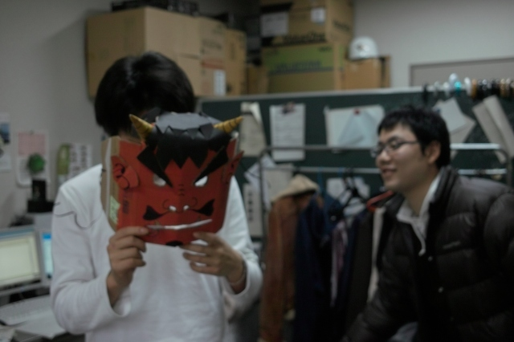
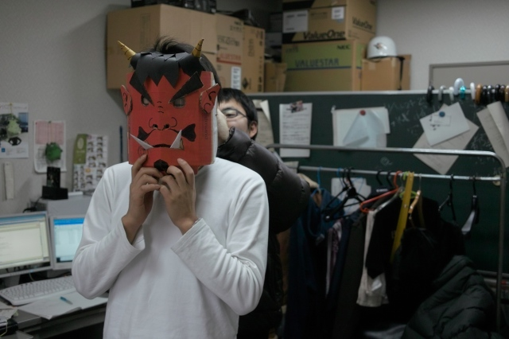
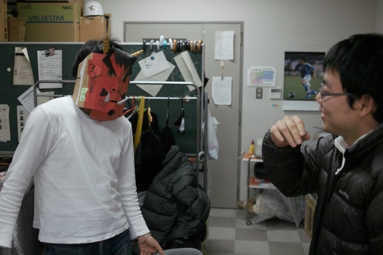
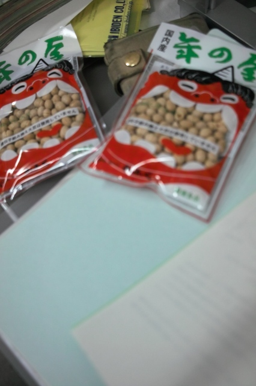

| ・そろそろ出番です(H22.02.02) | |||
いよいよ豆まきの日が明日に迫ってきました。お面は、エドモンドの空き箱とかの梱包材で出来てます。 目には当然、防豆用にセロハンつきです。1時間程度で完成。フェイスラインの角張りが今後の課題。 |
|||
|
そろそろ出番です。 |

コレがないと落ち着かない | ||
|

基本姿勢はこんな感じで。 |

ソフトでは繋ぎに徹します！ | ||
|

K(O)梶くん「Aザワさんなら何でも似合いますよ」 |

Aザワくん「もうちょっと締めてくれる」 | ||
|

Aザワくん「ばかにしてるやろ？」K(O)梶くん「似合いますよ（笑）」 |

明日が本番です。 | ||